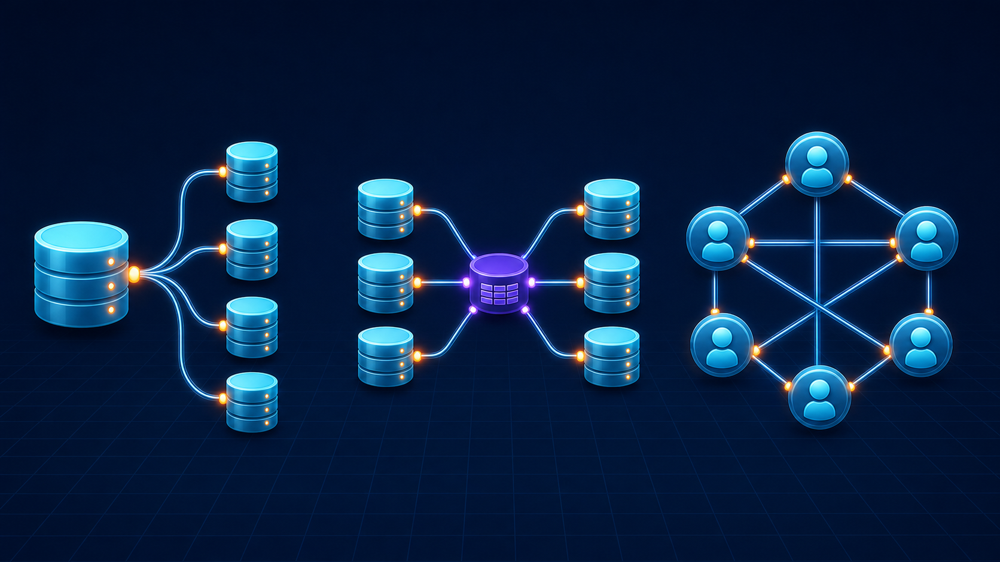
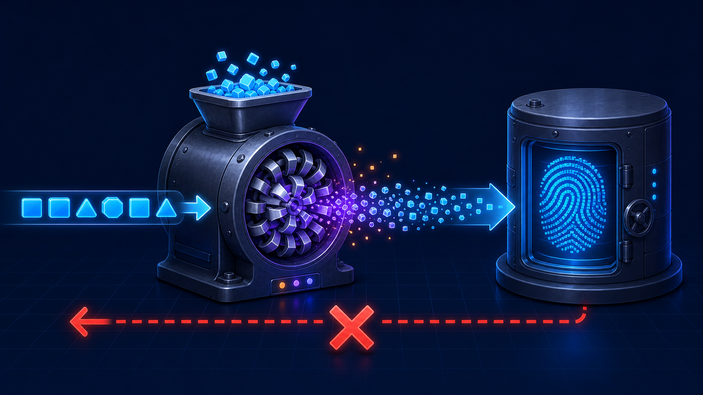
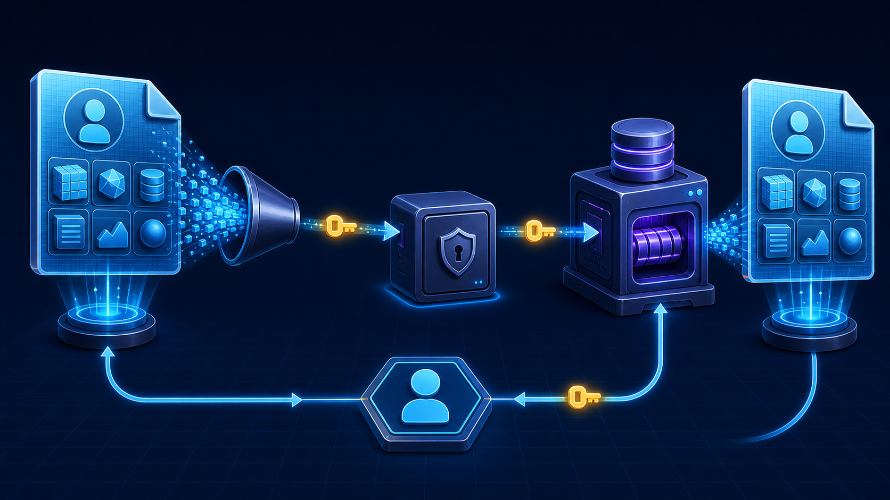

7편 · 93분 — 이 강의의 몸통
본 프로젝트 시작. 깃부터 깔고(전진 배치), 폴더 구조와 껍데기 화면까지 세운다.
git init → add → commitpush.gitignore에 node_modules, .env (“왜 .env를 빼는지는 5-3에서 뼈저리게”)add · commit · push · log 4개면 됩니다.”app.js 뼈대 + 넌적스 레이아웃User·Post·Hashtag 스키마와 관계를 드리즐로 정의한다. 팔로잉이 최종 보스.

1 : N
유저 ↔ 글
N : M
글 ↔ 해시태그
셀프 N : M
유저 ↔ 유저
로그인은 서버 개발 종합 격투기. 지금까지 배운 게 총출동한다.
bcrypt 해싱 도입 (단방향 → 복호화가 아니라 대조)process.env + dotenv (5-1의 .gitignore 회수)
db.insert(users).values({
email,
password: password,
});
const hash = await bcrypt.hash(password, 12); db.insert(users).values({ email, password: hash, });
Passport 최대 고비 serialize/deserialize를 두 문장으로 넘는다.

LocalStrategy 작성serializeUser / deserializeUser (3-2 세션 회수)isLoggedIn / isNotLoggedIn 미들웨어비밀번호를 아예 안 받는 OAuth 방식. Strategy만 갈아끼우면 된다.
KakaoStrategy + 콜백 라우터파일 업로드는 body-parser가 못 한다. multipart 전용 미들웨어 멀터가 필요.
팔로잉까지 마무리하고 풀 시나리오를 시연. 그리고 숨은 폭탄을 예고한다.
이 프로젝트엔 시한폭탄이 숨어 있다.
req.user가 undefined일 수 있는데
그냥 썼거든요.
JS는 실행 전엔 안 알려준다. 다음 섹션에서 타입스크립트가 그 폭탄을 전부 찾아낸다.